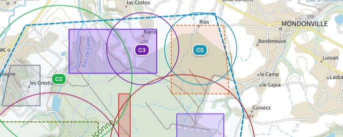
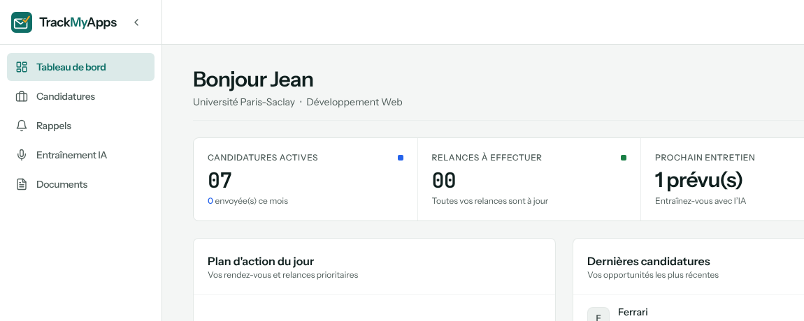
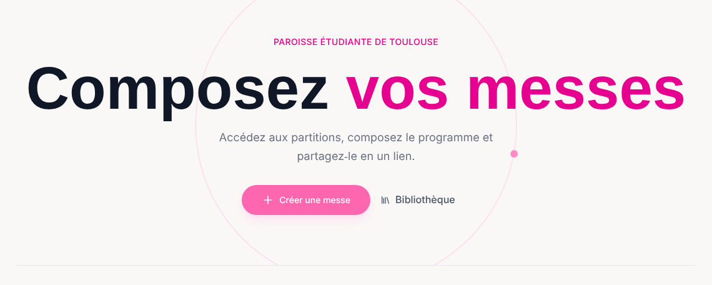
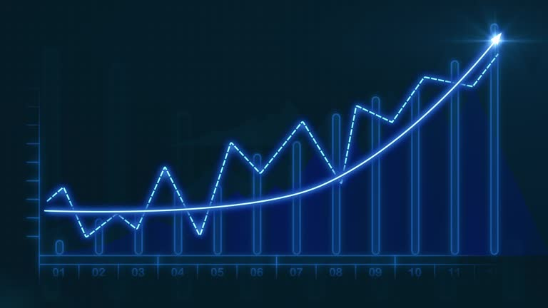
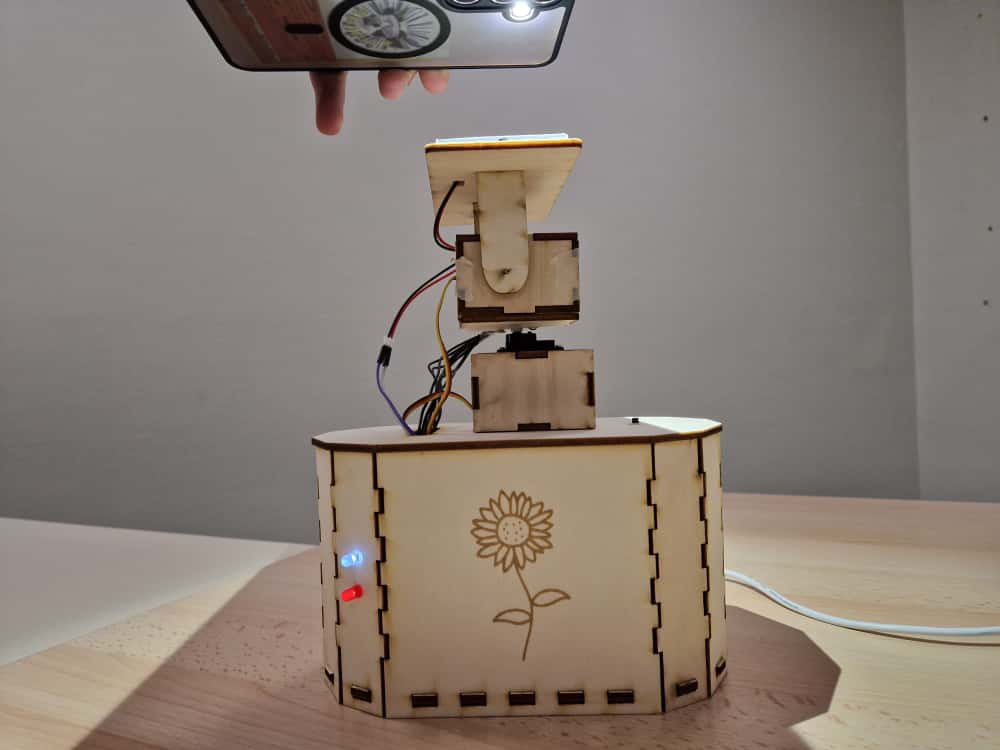

Alexis
de Lécluse
Étudiant ingénieur à l'ENSEEIHT, je rapproche la vision par ordinateur du terrain en l'embarquant sur des systèmes embarqués.
Ingénierie
Projets et compétences de mon cursus Sciences du Numérique.
Compétences
Langages
-
 Python
Python
-
 C++ / Arduino
C++ / Arduino
-
 Java
Java
-
 SQL
SQL
-
 OCaml
OCaml
Traitement de données
-
 Matlab
Matlab
-
 NumPy
NumPy
-
 Pandas
Pandas
-
 Scikit-learn
Scikit-learn
-
PyTorch
Outils & Systèmes
-
 Windows
Windows
-
 Linux
Linux
-
 Git
Git
-
Claude Code
-
GitHub Copilot
Soft Skills
- Travail en équipe
- Gestion de projet
- Créativité
- Résolution de problèmes
- Adaptabilité
Projets

Aeris : coordination de drones
Avec une équipe de six étudiants de l'ENSEEIHT, nous avons terminé 2e du hackathon AGIR, organisé avec la Région de gendarmerie d'Occitanie (octobre 2026). En une journée, nous avons conçu un outil d'aide à la décision pour dimensionner et coordonner l'emploi des drones en opération de gendarmerie : l'opérateur trace la zone, les secteurs prioritaires et interdits, et Aeris propose des placements optimisés, sépare l'espace aérien et recalcule le dispositif en temps réel lorsqu'un drone devient indisponible. En tant que lead architecture et intégration, j'ai mis en place le monorepo, la CI, les contrats entre modules et l'API.
Système de défense à guidage laser par drone
Étude d'ingénierie en cours, réalisée pour une start-up de la défense via N7 Consulting, la Junior-Entreprise de l'ENSEEIHT. Notre équipe travaille sur un système de défense à guidage laser par drone, et je suis en charge du développement des algorithmes de vision par ordinateur pour la détection et le tracking de cible. Pour des raisons de confidentialité, les détails du projet seront partagés ultérieurement.

TrackMyApps
TrackMyApps est une application SaaS qui aide les étudiants à centraliser et suivre leurs candidatures de stage, d'alternance ou d'emploi. En plus d'un tableau Kanban, de rappels, d'une synchronisation avec le calendrier et du stockage des documents, elle propose un simulateur d'entretien par IA (Google Gemini) en mode chat ou vocal, avec transcription en direct et réponses lues à voix haute. L'application a récemment été repensée autour de son propre design system, avec réinitialisation du mot de passe, compte démo en un clic et documents légaux conformes au RGPD. Le backend repose sur Node.js, Express, TypeScript, Prisma et PostgreSQL en fonctions serverless sur Vercel, et le frontend sur React, Vite, Tailwind CSS et shadcn/ui.

Mass Creator
Commandée par la Paroisse étudiante de Toulouse, Mass Creator aide les chorales et les équipes liturgiques à préparer leurs célébrations. Elle rassemble une bibliothèque de plus de 500 chants avec leurs partitions, permet de composer une messe pour chaque moment liturgique (ou d'en générer une automatiquement selon le temps liturgique) et de la partager via un lien court. Les partitions sont analysées par IA, et toutes celles d'une messe peuvent être fusionnées en un seul PDF avec un sommaire cliquable. Installable en PWA et utilisable hors ligne, elle s'appuie sur des routes API sécurisées (validation, limitation de débit, base en lecture seule depuis le navigateur) et une CI qui exécute lint, vérification des types, tests et build.

Modèle de Prédiction Financière
Développement d'un modèle de machine learning pour prédire l'évolution d'indices boursiers. Le projet a impliqué la collecte de données, l'ingénierie de variables et l'entraînement de plusieurs modèles (Random Forest, XGBoost) pour comparer leurs performances dans la prévision des tendances de marché.

Suiveur Solaire (Arduino)
Projet d'un suiveur solaire réalisé en fin de classe préparatoire : l'objectif est d'orienter un panneau solaire vers la source lumineuse la plus puissante autour du suiveur, avec deux degrés de liberté. L'orientation est contrôlée par une carte Arduino, commandant deux servomoteurs, d'après les données de quatre photorésistances placées avec le panneau solaire.
Carrière
Documents professionnels et expériences passées.
Expériences Passées
Stage ingénieur IA embarquée
Delair, Labège, Occitanie
Benchmarking de modèles de vision type YOLO sur différents NPU (Pi AI camera et iMX95) :
- Optimisation de Modèles YOLOv8/v11 : fine-tuning et quantification INT8
- Chirurgie de graphe : modification d'un YOLOv8n pour maximiser ses performances sur l'iMX95 (36 FPS)
- Linux Embarqué : compilation via Yocto d'un OS sur mesure
- Monitoring temps réel : FPS, latence NPU, charge CPU, température — architecture modulaire
Stage ouvrier
Lynred, Grenoble
Stage réalisé à la fin de mes deux ans en Prépa INP chez Lynred, leader européen de capteurs infrarouges, principal fournisseur de Safran et Thalès. J'étais opérateur en salle blanche dans la partie packaging (assemblage des capteurs). J'ai pu découvrir le fonctionnement d'une entreprise, ainsi que le rôle des ingénieurs et opérateurs dans un contexte de production industrielle.
Stage d'observation
Librairie Agapè, Orléans
- Découverte du fonctionnement d'une entreprise
- Réception des commandes
- Vente
Mobilité
Compétences linguistiques et aspirations à l'international.
Langues
- Anglais : Niveau C1 — Prêt pour une mobilité.
- Allemand : Niveau B1 — Connaissances solides.
Projets de Mobilité
Mon objectif principal est de réaliser un semestre ou une année de césure à l'étranger pour approfondir mes compétences en science des données et en intelligence artificielle. Je suis particulièrement attiré par l'écosystème nord-américain, reconnu pour son excellence académique et son dynamisme en matière d'innovation.
Destinations visées : Je cible principalement des universités aux États-Unis et au Canada (notamment le Québec) proposant des programmes de pointe en IA, Machine Learning et Traitement du Langage Naturel (NLP).
Cette expérience serait l'occasion idéale non seulement d'acquérir une expertise technique de haut niveau, mais aussi de m'immerger dans une culture de recherche et développement différente et de perfectionner mon anglais dans un contexte professionnel et académique.
Engagement
Implication associative et communautaire.
Scoutisme
Mon engagement dans le scoutisme est une part importante de ma formation. Fort de plus de 12 années dans des groupes scouts, j'ai pu développer mon autonomie et mon sens des responsabilités.
Actuellement, je suis chef dans une troupe de scouts à Toulouse. Ce rôle m'apprend à gérer une équipe, à organiser des projets et à encadrer des jeunes, développant ainsi des compétences en leadership et en pédagogie. Cela inclut également la gestion de budgets et la logistique.
Fresque du Climat
Dès la première année de mon cycle ingénieur, j'ai eu l'occasion de réaliser une fresque du climat, en collaboration avec d'autres élèves de l'ENSEEIHT. Cela nous a permis de prendre conscience des enjeux climatiques de notre époque et des défis que nous aurons à relever en tant que futurs ingénieurs.
Procès de King Kong
Également en première année d'école d'ingénieur, j'ai pu assister et participer à la pièce de théâtre interactive « Le procès de King Kong » portant sur les violences sexistes et sexuelles (VSS) et leurs conséquences.
Festival « Futur Proche »
L'ENSEEIHT ainsi que les différentes universités de Toulouse m'ont permis de participer au festival « Futur Proche », regroupant de nombreuses conférences, ateliers et présentations sensibilisant sur les enjeux climatiques, notamment du point de vue scientifique à travers les différentes innovations apportées ou en cours de développement.
Activités
Passions en dehors de l'ingénierie.
Musique
Trompette
Niveau 3ème cycle après 10 ans en Conservatoire. J'ai eu l'opportunité de participer à différents orchestres, explorant des répertoires variés (classique, jazz...), ce qui m'a appris la rigueur et le travail en groupe.
Piano / Orgue
Autodidacte, j'ai appris le piano puis l'orgue en parallèle de mes années de trompette. Cela me permet aujourd'hui d'accompagner des chanteurs ou autres instrumentistes lors d'évènements ou concerts.
Chant
Choriste (pupitre basse et ténor). Mon intérêt pour la direction m'a amené à être chef d'un chœur de 9 lycéens, une expérience formatrice en gestion de projet et en direction d'équipe. Je suis actuellement membre d'une chorale à Toulouse en tant que ténor.
Contact
N'hésitez pas à me contacter pour un stage, un projet ou un simple échange.